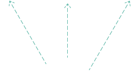
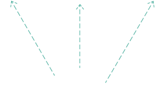

ჩათვალეს თუ არა თქვენი ხმა?
ვიზუალიზაციის მიზანია ასახოს, როგორ არ ითვლება ყველა ხმა არჩევნებზე საქართველოში.
ვიზუალიზაციის სანახავად
ჩასქროლეთ დაბლა ან გამოიყენეთ ქვედა ისარი
until you get to the end of the story.


 


 1 - შესაძლო ამომრჩევლები
1 - შესაძლო ამომრჩევლები